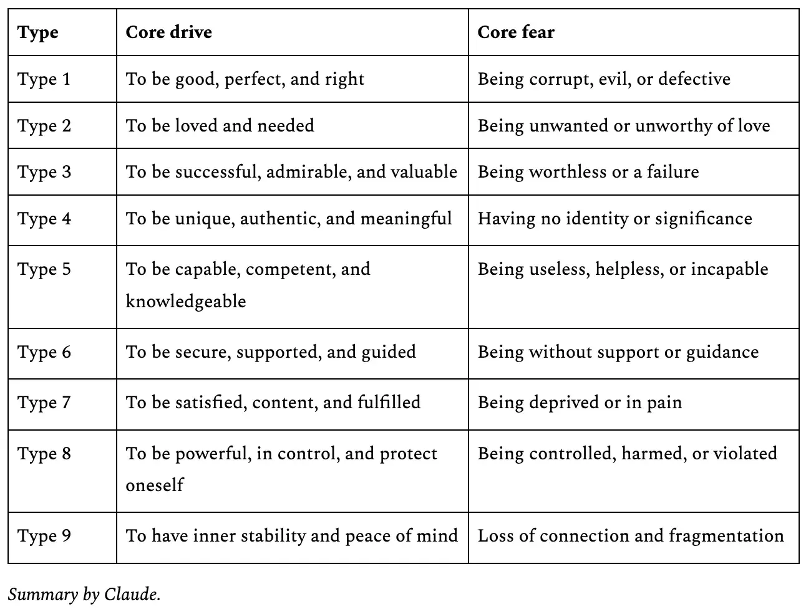

- Personality typing systems
- Cate Hall1 substack post - “There are nine wolves inside of you” 👇
“When I first encountered the Enneagram, I thought it sounded pretty dumb: Nine types of people, precisely? It seemed awfully arbitrary, not unlike astrology. But some wise friends (including my husband) convinced me to give it a shot, and that decision ended up making me happier, saner, and more free. Here are a few notes about how I came to love it and why you might too, especially if you’re an overly cerebral type like me.”
“Behind the character sketches of the personality types, this is the core thing the Enneagram does. It identifies a small set of drives or fears that are the fundamental forces behind traits and preferences and behaviors. Your type is simply the drive or fear that is so overpowered it becomes the primary organizing principle of your life, generating both your successes and failures. You are “ruined by your gift,” in the words of Major Enneagram Guy Richard Rohr.”
-

-
Sasha Chapin - “Talking Enneagram 7 blues”
Me - 3 (achiever)
Richard Rohr notes
- Re: the 3
- Heart gives totally wrong signals re: e.g. “I really liked that person, so I assumed they’d be really effective!“. Disappointed a lot. Need good mentors to help them clarify their emotional world
- Get out of the dance of the first feeling of “who loves me”
- “The enneagram as the discernment of spirits”
- “We’re not into killing our demons - we’re going to make the devil work for God”
- “As soon as you try to bring about good things by domination, they become a bad thing, by definition” - DefenderofBasic makes the same point in “On the Asymmetry of Good & Evil”
- It’s not about traits, it’s about motivations, traits are just partial giveaways
- Original sin, a primary flaw/ill perception, and there are 9 basic shapes of it, and we’re addicted to it
- We’re addicted to it, most you can do (?) is move it into consciousness, level of redemption
- If you try to attack it, you attack it with the energy that you are, which only doubles the energy (like Andrew’s thing about how you can’t create your own vajrayana yidam)
- Christianity, Sufi Islam and Jewish Kabbalah
- A primary blindness/addiction in all of us → egocentrism
- These 9 shapes used to be called the passions, and you’d need to discern your passion, or a modern phrase might be compulsion/addiction
- Playing your strong suit, the thing that works well for you
- Something about this not being a self-improvement project (I guess because that is an inherently egocentric framing, and that’s the whole problem)
- Some really great stuff about sin and e.g. Meister Eckhart
- First the call, then the recovery from the fall, and both are the grace from God
- Suffering is fuel → some great quotes!
- So my goal here is not character-building, or personality development
- My goal is to move you to a contemplative awareness, a transformation of consciousness much more than a development of consciousness. And not development of ego but humiliation of ego
- It won’t be the information itself that converts you, unless it subverts you
- What the enneagram wants to say → “you are destroyed by your gift”. Jesus: “the stone that the builder rejects is actually the cornerstone”. The shadow self, the unacceptable self.
- The 3 → can never be a public failure
- Moving towards Total Reality (God, Ground of Being, etc)
- It’s Christian to the core, in Richard Rohr’s understanding of it
- Flow with your gift and integrate your shadow. Affirming the broken side, the place of the wound, “through the wound we are healed, through the wound we come to God” → why he thinks it’s Christian to the core
- We’ve all created a marketable self, a strategic self, a personal manager who we have to fire
- Calculating Mind vs Contemplative Mind. (Same as Iain McGhilchrist)
- I am who I am, and it’s ok. And God’s using all of me to bring me to God. I don’t take any time now splitting, rejecting, avoiding or denying, because it is what it is and I am what I am,
- The sinner is actually the one who does not live himself enough (that is, does not love their shadow too)
Footnotes
-
COO of Alvea when I worked there, big ~Effective Altruist ↩